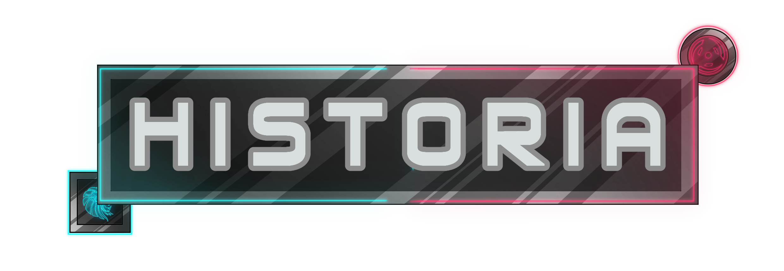

Un juego de estrategia en el que juegas con la galaxia
Ayuda en la batalla entre los STARSEEKERS Y los HIDEVOID, unete a una guerra civil a escalas galacticas donde la linea de lo moralmente adecuado se vuelve trivial y lo unico que quiere cada bando es imponer su propia supremacia, donde conoceras personajes con transfondos unicos y razones justificables para buscar la destruccion del bando enemigo. Disfruta esta experiencia narrativa y visual y sobretodo...
¡dejate llevar por nuestra musica!
Es un videojuego en el que controlamos dos facciones de una guerra que luchan por el control las “Gateway”, puertas a otro mundo que dan energía y son esenciales para la civilización humana actual. Con recursos limitados ambas facciones tienen que lograr asegurar las “Gateways” que salen a la luz mientras que defienden de interminables hordas de abominaciones espaciales y de ataques de facciones emergentes, utilizando los limitados recursos que tienen a su disposición y las habilidades de cada miembro.

Año 3500 dc, la humanidad ha logrado una paz relativa. Las civilizaciones ahora buscan expansión a lo largo de las estrellas. La humanidad está al borde de la inmortalidad.
Sistemas de satélites se expanden por el cielo, los techos de las ciudades están plagados de vegetación y paneles solares. El hambre se solucionó hace mucho. Los ejércitos se convirtieron en algo secundario mientras centras sus esfuerzos en el vacio del espacio.
Pero esta paz no podría durar. En un fatídico dia todo cambio, cuando el primer gateway aparecio e infesto nuestra civilizacion con engendros asesinos.
La humanidad apenas logró sobrevivir. Después del re-comienzo, se fundaron diversos asentamientos. La guerra por la supervivencia primaba. Los recursos escaseaban.
Poco a poco se recrearon las ciudades y sistemas. Y dentro de la población empezaron a surgir personas con “talentos especiales”.
Los engendros empezaron a regresar poco a poco, y se abrieron “puertas” conocidas como “Gateways”. Estas puertas se convirtieron en una fuente de recursos, energía y conocimiento. Se crearon diferentes unidades destinadas a la captura de estas y a la defensa contra engendros.
La mayoría de niveles de “Gateway” siguen el mismo patrón, un nuevo “Gateway” nace y las tropas de una facción se dirigen a ella para asegurar la zona, lo más que puedan, antes de que las hordas de monstruos empiecen a llegar. El objetivo fundamental es que las hordas destruyan el Gateway, la dificultad en Gateway irá aumentando de manera progresiva de nivel a nivel.El jugador tendrá que dividir su atención en varios caminos asimétricos con diferente composición de enemigos, forzando cambios de estrategia de nivel a nivel.Cada nivel cuenta con una cantidad de puntos de despliegue que sirven para desplegar mechas. El coste varía dependiendo de a que héroe el mecha tendrá asociado, esto es elegido al desplegar al mecha. Un mecha puede estar asociado a un solo “héroe”
¿EL LANZAMIENTO DEL JUEGO SE DARAEN LAS PLATAFORMAS DE LINUX Y MAC?
-Desafortunadamente, no planeamos admitir Mac y Linux. Es mucho trabajo respaldar las tres plataformas y las ventas de nuestros juegos anteriores en esas plataformas no han sido lo suficientemente fuertes.
¿EN CUANTOS IDIOMAS SE PIENSA TRADUCIR GATEWAY?
-Nuestro soporte de idioma inicial será inglés, español y francés. Queremos agregar muchos más idiomas y buscaremos formas de hacerlo.
¿ESTARA DISPONIBLE EN PLATAFORMAS DE CONSOLA?
-Actualmente no tenemos ningún plan para lanzar el juego en otras plataformas de consola, pero definitivamente está bajo consideración para el futuro. Sin embargo, por ahora, no queremos dejar que el alcance del proyecto se salga de control al admitir más plataformas.
¿SERA LANZADO CON UNA VERSION FISICA DEL MISMO?
-Actualmente no tenemos planes para un lanzamiento físico del juego. La recompensa de esta pagina solo te da derecho a una copia digital del juego.
las donaciones se hacen a base de 3 contribuciones, las de mayor rango contienen a las de menor rango
¡ayudanos a que este juego se haga realidad y recibe recompensas como agradecimiento!
CABO
item exclusivo
peluche de will'o
llavero de M.i.d.a.s
agradecimientos firmados
5$
mensuales
INVESTIGADOR
Personaje exclusivo
Poster de regalo
Pin de tu bando favorito
Banda sonora en CD
25$
mensuales
GENERAL
Mapa exclusivo
Personaje basado en ti
Figura de coleccion
Concept art eliminado
100$
mensuales
ATENCIÓN: Esta página simula la campaña de microfinanciación
de un videojuego ficticio (no representa un producto real).
Práctica de Multimedia, 1º GDDV - Curso 20/21 (Móstoles), URJC.
La URJC no se hace responsable del contenido expuesto por el autor.
-Grupo A: Puzzles, formado por
Daniel Alvarez Franco (programador diseñador y escritor)
Jose Daniel Cano Blazquez
Alberto Caro Candon (publicidad)
Mauricio Fernandez Rojas (ilustrador diseñador y escritor)
Yago Ortiz garcia (creacion y edicion de video y audio)
Daniel Pandolfo Mendozas (apoyo multifunciones)